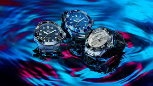

París, 10 de junio de 2024. En un movimiento estratégico que reafirma su posición como líder en el mercado del lujo, el conglomerado francés LVMH ha anunciado la adquisición de la prestigiosa marca de relojes suizos Hublot. La compra, valorada en 2.5 mil millones de euros, expande aún más el impresionante portafolio de LVMH, que ya incluye marcas icónicas como Louis Vuitton, Dior y Moët & Chandon.
Detalles de la Adquisición
LVMH (Moët Hennessy Louis Vuitton), dirigido por Bernard Arnault, ha estado en una trayectoria de crecimiento constante, consolidando su dominio en el sector del lujo. La adquisición de Hublot, conocida por sus innovaciones en la relojería y su estilo distintivo, se alinea con la estrategia de LVMH de fortalecer su presencia en el mercado de bienes de lujo de alta gama.
Hublot, fundada en 1980, ha ganado renombre por su enfoque en la combinación de materiales poco convencionales y diseño audaz. La integración de Hublot en LVMH permitirá sinergias significativas en términos de distribución, marketing y desarrollo de productos.
Reacciones y Proyecciones

La noticia ha sido bien recibida por los analistas de la industria, quienes ven la adquisición como un paso positivo para ambas empresas.
"Esta es una jugada magistral para LVMH, que no solo fortalece su posición en el mercado de relojes de lujo sino que también adquiere una marca con una identidad única y una sólida base de clientes leales," comentó Jean-Claude Biver, experto en relojería.
Los directivos de Hublot han expresado entusiasmo por unirse al conglomerado, viendo la oportunidad de crecimiento y expansión global que ofrece LVMH.